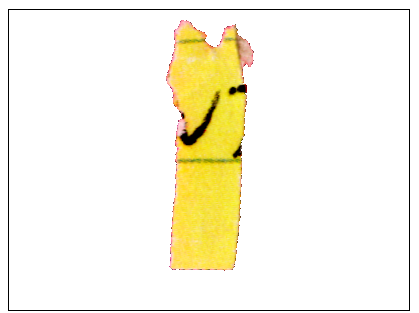
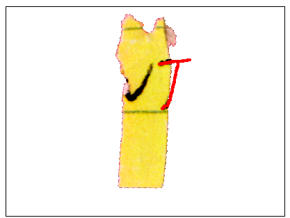
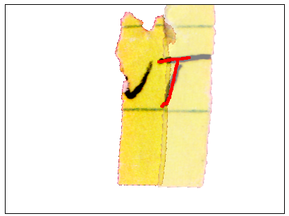

(a) A single piece is displayed:

(b) The right looks like part of a 'T'. A hallucination is drawn
on the canvas:

Hints:
- we only extend the ink text, not the green lines
- it's OKAY to trace over the current piece.
- only draw on the RIGHT.
(c) The system takes the hallucination and uses it to
find the best match by template
matching it to other pieces [we do this on the backend using your submitted drawings]:
